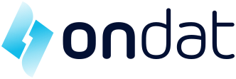
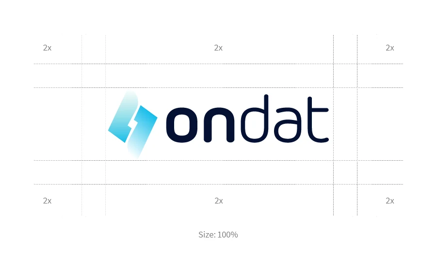
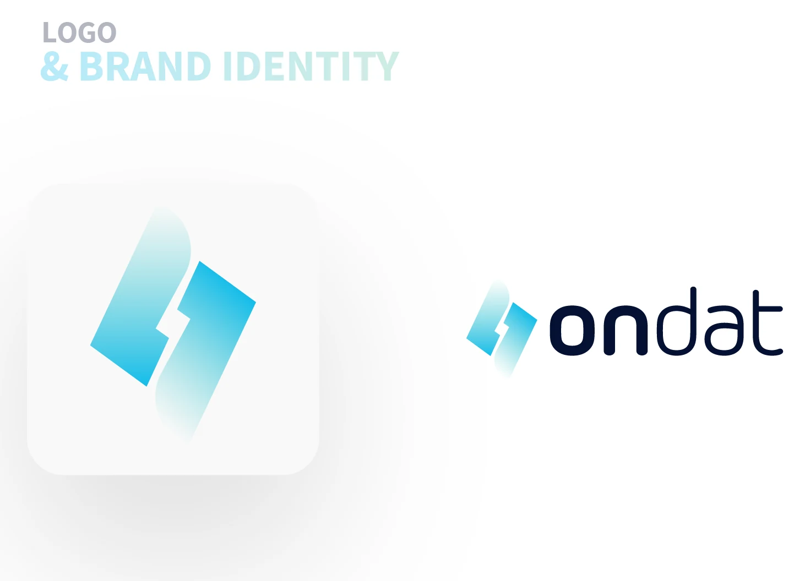
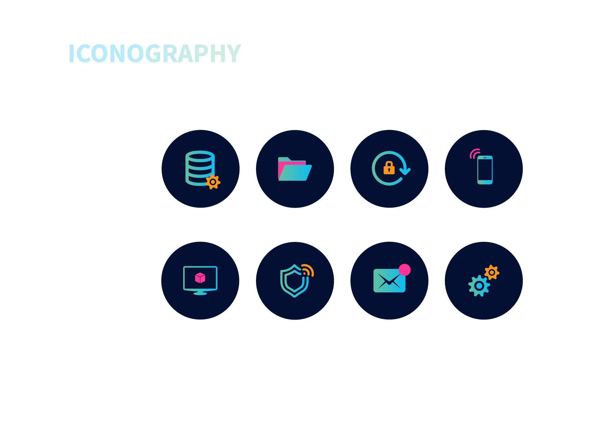
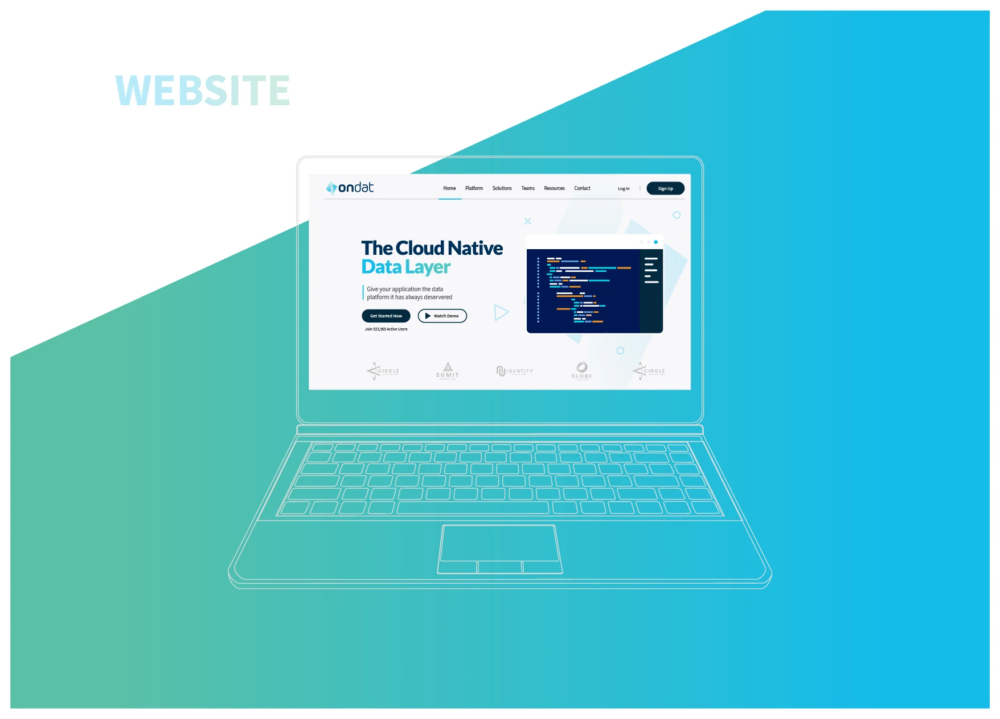
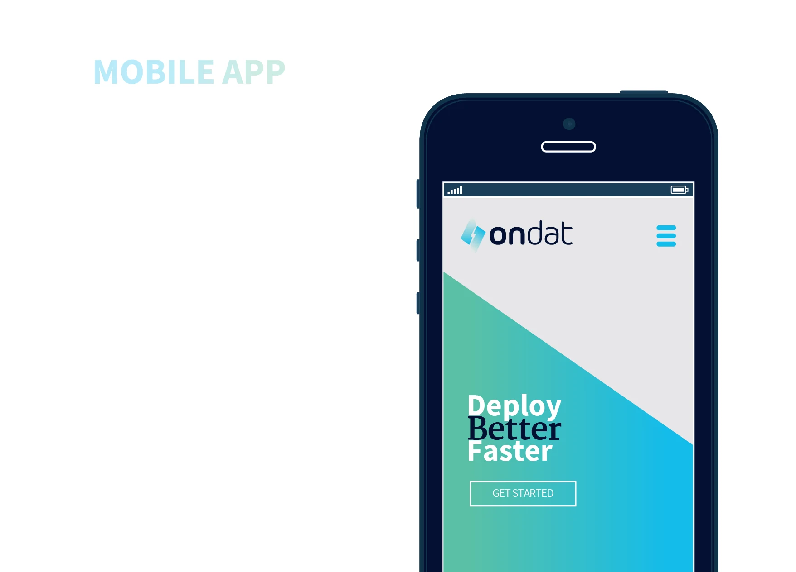
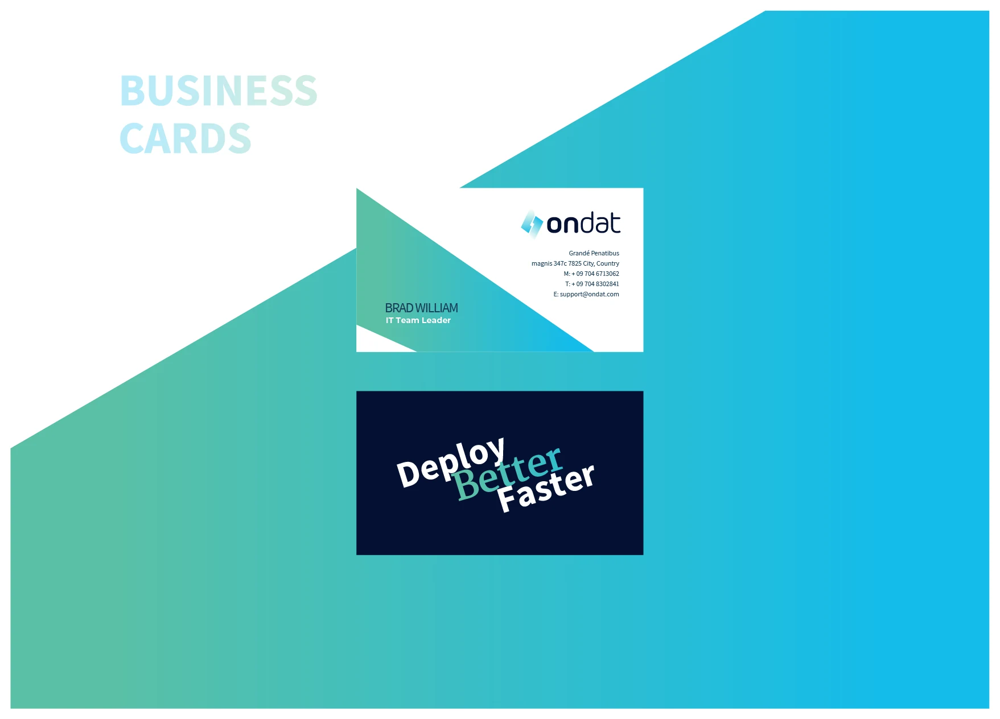
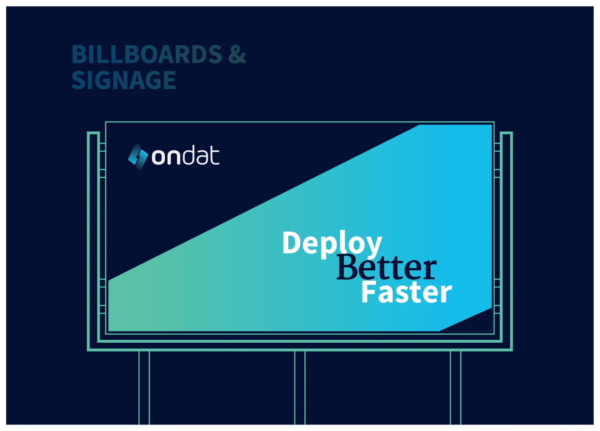

DeployBetterFaster.
Ondat is a new solution for DevOps teams and developers to manage and deploy their databases and Kubernetes instances. I created its full branding, from a new logo to a fresh visual language.
A full re-branding, from the first question.
I was called for a full re-branding, from a new logo to a fresh visual language, created through an extensive deep dive.
- UnderstandAn extensive deep dive, first to understand the product and its world.
- ResearchThen research, to find the best solution.
- IdentityAn identity that is both tailor-made and original.
Two slabs, one charge.
The symbol is made of two slanted slabs that fit together with a bolt-shaped gap between them, fading out at opposite ends. It sits beside a lowercase wordmark that mixes a bold “on” with a light “dat”.



Cyan, mint and deep blue, on night navy.
Three primary colours, a dark contrast colour and a light grey. Click a colour to copy its hex.
on billboards, cards and web
Source Sans, with a serif accent.
Source Sans Pro Bold leads, Merriweather Bold adds the editorial accent (like the “Better” in the tagline), and Lato and Assistant carry the supporting text.
abcdefghiklmnopqrstuvwxyz
01234567890
abcdefghiklmnopqrstuvwxyz
01234567890
abcdefghiklmnopqrstuvwxyz
01234567890
abcdefghiklmnopqrstuvwxyz
01234567890
Icons for a developer’s day.
Eight icons on night-navy discs, drawn in the cyan-to-mint gradient with small orange and pink accents: a database, a folder, a locked backup, a mobile device, a monitor, a shield, mail and settings.

On screens, cards, billboards and photos.
The line “Deploy Better Faster” and the diagonal mint-to-cyan cut carry through every touchpoint. Click any image to enlarge it.



